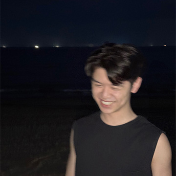
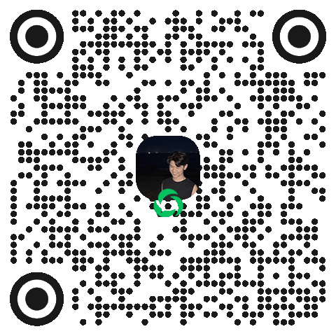

吞拿鱼扣子
base Singapore
这份清单已经换新家了
新家在 ericcoding.com。清单原样搬了过去，往后的政策核验和更新只在那边继续。
进入清单在这个地址勾过的记录存在本机浏览器里，带不过去，新家要重新勾一次。
关注开发者
这对我真的很重要

微信公众号在微信里长按这张图识别；别的浏览器长按没反应，截屏后用微信扫一扫。这个地址不再更新，页面留着只为把老链接送到新家。
这个地址的任务完成了100%

吞拿鱼扣子
base Singapore
新家在 ericcoding.com。清单原样搬了过去，往后的政策核验和更新只在那边继续。
进入清单在这个地址勾过的记录存在本机浏览器里，带不过去，新家要重新勾一次。
这对我真的很重要

微信公众号在微信里长按这张图识别；别的浏览器长按没反应，截屏后用微信扫一扫。这个地址不再更新，页面留着只为把老链接送到新家。